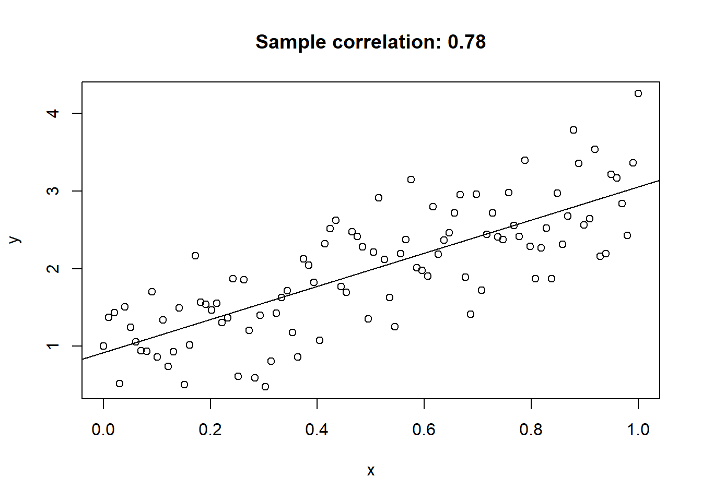
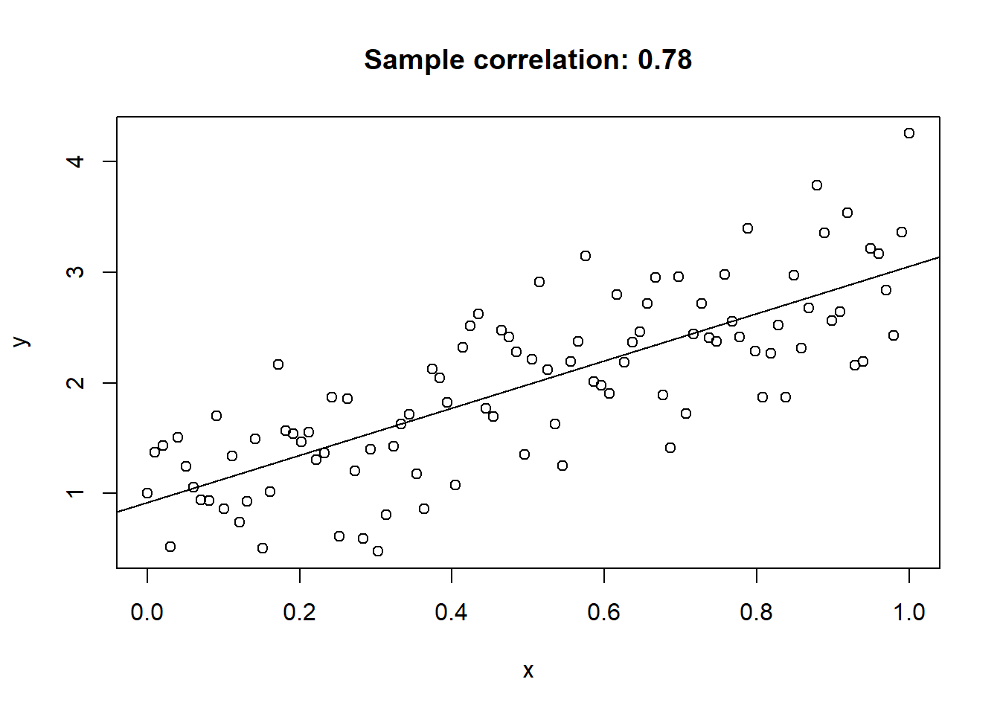
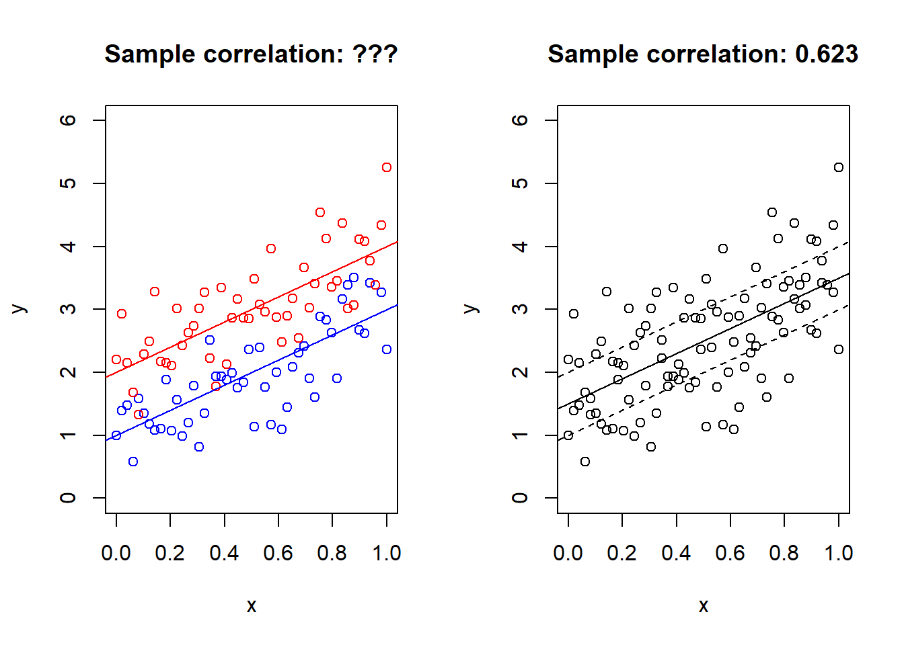
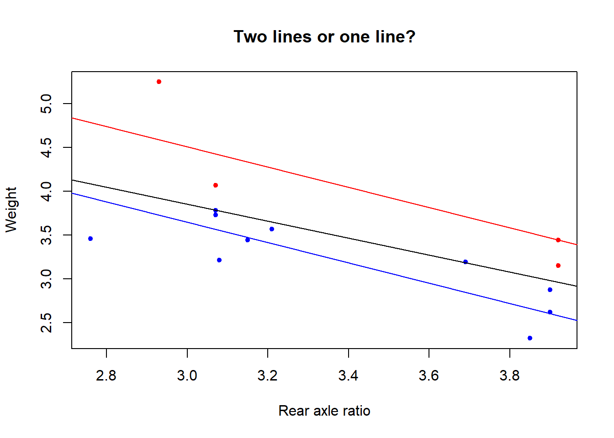

Generate and plot some data from a line.
set.seed(313)
n = 100
x = seq(0, 1, length.out = n)
y = 2 * x + 1 + rnorm(n) * 0.5
plot(x, y, main = paste0("Sample correlation: ", round(cor(x,y), 3)))
abline(lm(y ~ x))
Jonas Moss
Jan 25, 2023
What is this? A rant about an unimportant problem. Read at your own risk!
Everyone knows the correlation coefficient. It measures the degree of linear dependence between two random variables \(X\) and \(Y\). It finds the best-fitting line \(Y=a+bX\) and measures how far the observed values of \(Y\) are from the predicted values of \(y\) given \(X\).

That should be familiar. But what if there are TWO parallel lines in the data?!
set.seed(313)
par(mfrow=c(1,2))
n = 50
x1 = seq(0, 1, length.out = n)
y1 = 2 * x1 + 1 + rnorm(n) * 0.5
x2 = seq(0, 1, length.out = n)
y2 = 2 * x2 + 2 + rnorm(n) * 0.5
plot(x1, y1, main = paste0("Sample correlation: ???"), col = "blue", ylim = c(0, 6), xlab = "x", ylab = "y")
points(x2, y2, col = "red")
abline(a = 1, b = 2, col = "blue")
abline(a = 2, b = 2, col = "red")
x = c(x1, x2)
y = c(y1, y2)
z = c(rep(0, 50), rep(1, 50))
plot(x, y, main = paste0("Sample correlation: ", round(cor(x,y), 3)), xlab = "x", ylab = "y", ylim = c(0, 6))
abline(a = 3/2, b = 2)
abline(a = 1, b = 2, lty = 2)
abline(a = 2, b = 2, lty = 2)
The data has been simulated from the model \[\begin{eqnarray*} y\mid x,z=0 & \sim & 2x+1+\frac{1}{2}\epsilon,\\ y\mid x,z=1 & \sim & 2x+2+\frac{1}{2}\epsilon. \end{eqnarray*}\] where \(z\) is a group indicator and \(\epsilon\) is standard normal. Moreover, the \(x\)s are \(50\) observations uniformly spaced on \([0,1]\). What is the marginal model, with \(z\) integrated out? It’s \(2x + 3/2\), displayed on the right. The plot on the right certainly doesn’t look like it contains two lines.
If we know the joint distribution of \((X,Y,Z)\) , generalizing the correlation is easy! The ordinary correlation coefficient can be written as \(\operatorname{Cor}(X,Y)=\operatorname{sign}\beta\sqrt{R^{2}}\),where \[R^{2}=1-\frac{\min_{a,b}E\left[(Y-a-bX)^{2}\right]}{\min_{\mu}E\left[(Y-\mu)^{2}\right]},\] and \(\beta\) is the minimizing slope of the numerator. Now just add the covariate \(1[Z=1]\) to the linear regression model in the denominator, and the resulting correlation becomes \[\operatorname{Cor}(X,Y;Z)=\operatorname{sign}\beta\sqrt{R_\star^{2}},\] where \[R^{2}_\star=1-\frac{\min_{a,b}E\left[(Y-a_{0}-a_{1}1[Z=1]-bX)^{2}\right]}{\min_{\mu}E\left[(Y-\mu)^{2}\right]},\] and \(\beta\) is the minimizing slope of the numerator (the sign of the slope is unambiguous since we’ve assumed the lines are parallel).
Calculating this correlation coefficient is easy as pie.
And its much larger than the “one-line correlation”, going from \(0.62\) to \(0.85\). But we can’t calculate it without knowing \(Z\)!
So, we know the joint distribution of \((x,y)\), and nothing more. How can think about the “two-lines correlation”? I can only think of one reasonable way to solve the problem. We need to find lower and upper bounds for \(\operatorname{Cor}(X,Y;Z)\). Because we might not know \(Z\), but maybe we can find bounds for the correlation \(\operatorname{Cor}(X,Y;Z)\) that we could have calculate had we known \(Z\).
I can’t think of an efficient way to calculate upper bounds, but the lower bound is simple enough (in the case when the correlation is positive): It equals \(\operatorname{Cor}(X,Y)\). When dealing with estimation problems, a reasonable estimator of the upper bound would be to make every possible split of the data into into two categories (according to z)and fit the regression model y ~ x + z. But that would be \(2^n\) combinations, which is obviously intractable for large \(n\). It might be possible to find exact algorithms that aren’t exponential in time, indeed, I would expect it, but I can’t justify spending more time on this problem.
However, consider the following data
Since \(2^{15}= 32768\) we don’t need to fit that many linear regressions to estimate the upper correlation bound in this case.
n <- 15
x <- mtcars$drat[1:n]
y <- mtcars$wt[1:n]
n <- length(x)
mat <- cbind(1, x, 0)
minimum = Inf
for(k in seq(0:n)) {
icomb <- arrangements::icombinations(n, k)
choose(n, k)
for(i in seq(choose(n, k))) {
indices <- icomb$getnext()
mat[, 3] <- 0
mat[indices, 3] <- 1
mod <- lm.fit(mat, y)
current <- sum(mod$residuals^2)
if (current < minimum) {
minimum = current
z = indices
coef <- mod$coefficients
}
}
}
cor2 <- sqrt(1 - minimum/sum((y - mean(y))^2)) * sign(coef[2])
cor1 <- cor(x, y)From the code above we find that lower and upper bounds for the two lines correlation:
Let’s also have a look at the classification of points that maximizes this correlation.

The two lines correlation for this optimal classification equals the lower bound above.